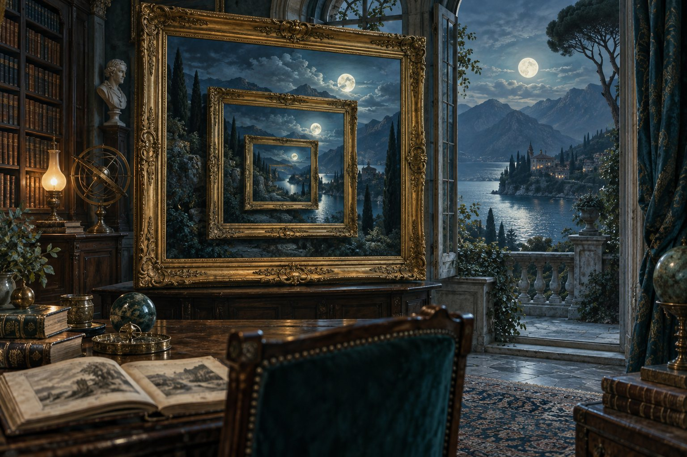
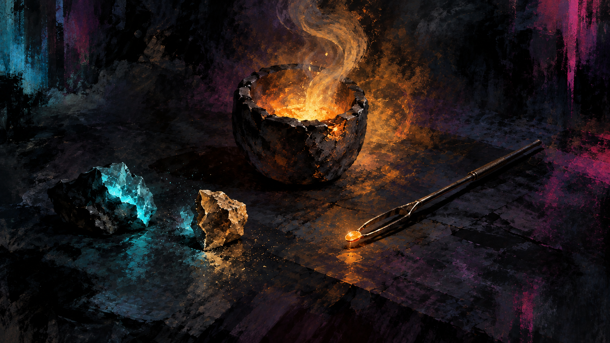

Essay 02 September 21, 2026 14 minute read
What Comes Before Confidence
A personal essay about how AI can shape the information and context people use to judge what they know.


Selected writing
Essay 02 September 21, 2026 14 minute read
A personal essay about how AI can shape the information and context people use to judge what they know.

More writing

Essay 01 September 10, 2026
A personal essay about staying responsible for decisions when AI works across expertise I cannot fully evaluate alone.
June 17, 2026 Historical republication
An early essay on designing for everyday friction—and using AI to spot where human attention matters most.